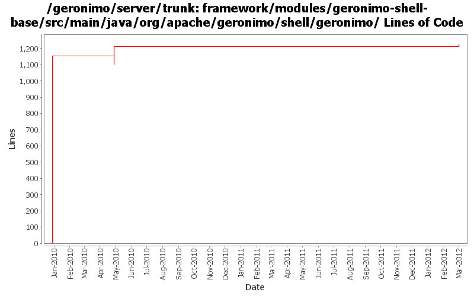

[root]/framework/modules/geronimo-shell-base/src/main/java/org/apache/geronimo/shell/geronimo

| Author | Changes | Lines of Code | Lines per Change |
|---|---|---|---|
| Totals | 30 (100.0%) | 1408 (100.0%) | 46.9 |
| genspring | 9 (30.0%) | 1156 (82.1%) | 128.4 |
| gawor | 10 (33.3%) | 223 (15.8%) | 22.3 |
| xiaming | 3 (10.0%) | 17 (1.2%) | 5.6 |
| djencks | 8 (26.7%) | 12 (0.9%) | 1.5 |
GERONIMO-6286 some reasonable changes that reflect multiple instances scenario in mind, though those gogo commands not work now, provided by Russell, for 3.0 trunk
17 lines of code changed in 3 files:
GERONIMO-6240 remove/clean up some unused startup code
1 lines of code changed in 1 file:
GERONIMO-6251 work on geronimo-maven-plugin. Use jmxrmi connector from karaf, add DeployerGBean in (slightly inappropriate) j2ee-deployer
1 lines of code changed in 1 file:
GERONIMO-6240 Update to changed jline and moved shell annotations
9 lines of code changed in 5 files:
GERONIMO-5213: Implement start-server shell command to fork the server process. Might need to rethink that later on
151 lines of code changed in 4 files:
GERONIMO-5213: Fix a bunch of Geronimo Karaf shell commands. Add support for 'embedded' mode where the commands know they are executing in a server shell and do not require a jmx connection
72 lines of code changed in 6 files:
cf OPENEJB-1252 replace file.toURL() with file.toURI().toURL()
1 lines of code changed in 1 file:
GERONIMO-4948 To migrate existing geronimo gshell commands to karaf based shell. --- committing migrated commands into shell-base. Thanks Vanessa for her help.
1156 lines of code changed in 9 files: